The Today, Chat, Project, Automations, Settings → General and Memory → Suggested pages already use the shared page grid. This page covers every other surface I could render on the core-ui-workbench branch against the e2e fixture: what it looks like now, and how it moves onto the same system.
| View | Priority | Component | Main change |
|---|---|---|---|
| New automation | P1 | NewScheduleForm.vue | Card with uppercase labels becomes the same sections as the automation detail page |
| Memory → Map (graph and list) | P1 | MemoryMapView.vue | Onto the page grid with a rail; sidebar stops being a second dashboard |
| Settings → Workspaces | P1 | SettingsView.vue | One row per workspace; Save only when changed; Archive behind a menu |
| Settings → Models & providers | P1 | SettingsView.vue | No pink Reconnect bar; defaults as hairline rows; one critique control |
| Settings → Automations | P2 | settings/SettingsAutomation.vue | Real switches, sans titles, rail with run status |
| Settings → Skills, Subagents, Commands, MCP | P2 | SettingsView.vue, SettingsMcpServers.vue | One shared list pattern with a counts rail and a real empty state |
| Memory → Notes to revisit, History | P2 | VaultReviewPanel.vue, ProposalHistoryList.vue, ProposalReviewPanel.vue | Drop the inner inset and pill filters; neutral per-row actions |
| Subagent transcript | P2 | SubagentChatView.vue | Chat header, chat empty state, rail with run facts |
| Model picker popover | P2 | ModelSelector.vue | No uppercase mono groups, no pink-filled selection |
| Settings → Notifications | P3 | settings/SettingsNotifications.vue | Status as a row, not a boxed callout |
This device (/device) | P3 | DevicePanel.vue | Cards and lowercase mono titles become plain sections |
| Connection banner, sidebar footers, New chat picker | P3 | ChatLayout.vue, ProjectSidebar.vue, NewChatPicker.vue | Sans banner; footer buttons move into section labels; picker selection matches the sidebar |
| Login | Keep | LoginView.vue | A terminal moment, allowed by DESIGN.md. No change. |
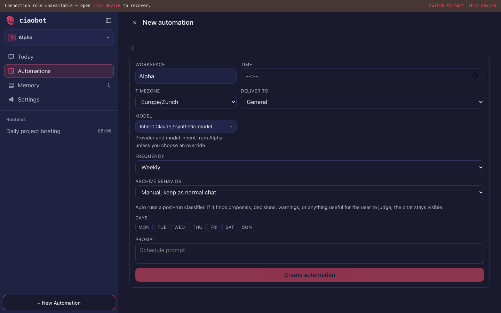
What Ciao does each time this runs.
SchedulePanel already shows them, so creating and reading an automation look alike.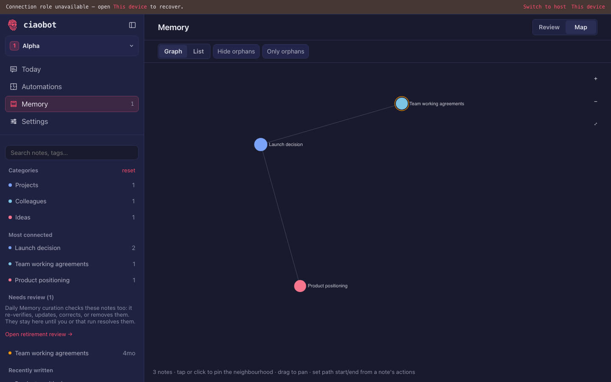
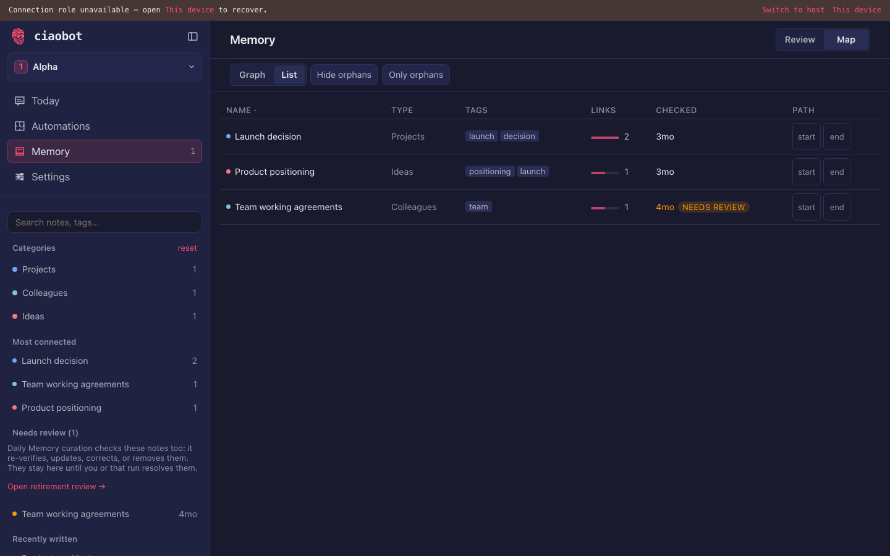
Click a note to pin its neighbours. Drag to pan. Every note is also in List.
| Name | Type | Tags | Links | Checked | |
|---|---|---|---|---|---|
| Launch decision | Projects | launch, decision | 2 | 3 mo | |
| Product positioning | Ideas | positioning, launch | 1 | 3 mo | |
| Team working agreements | Colleagues | team | 1 | 4 mo Needs review |
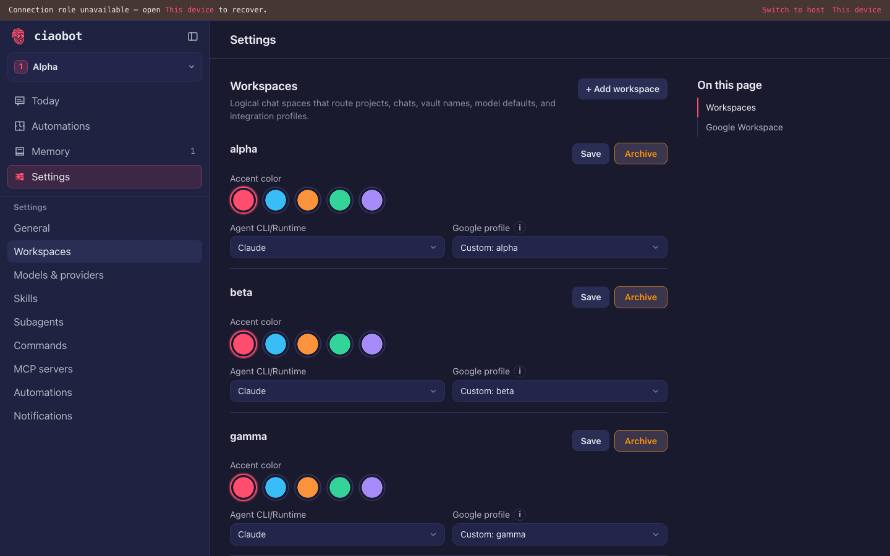
Each workspace keeps its own projects, chats, memory and model defaults.
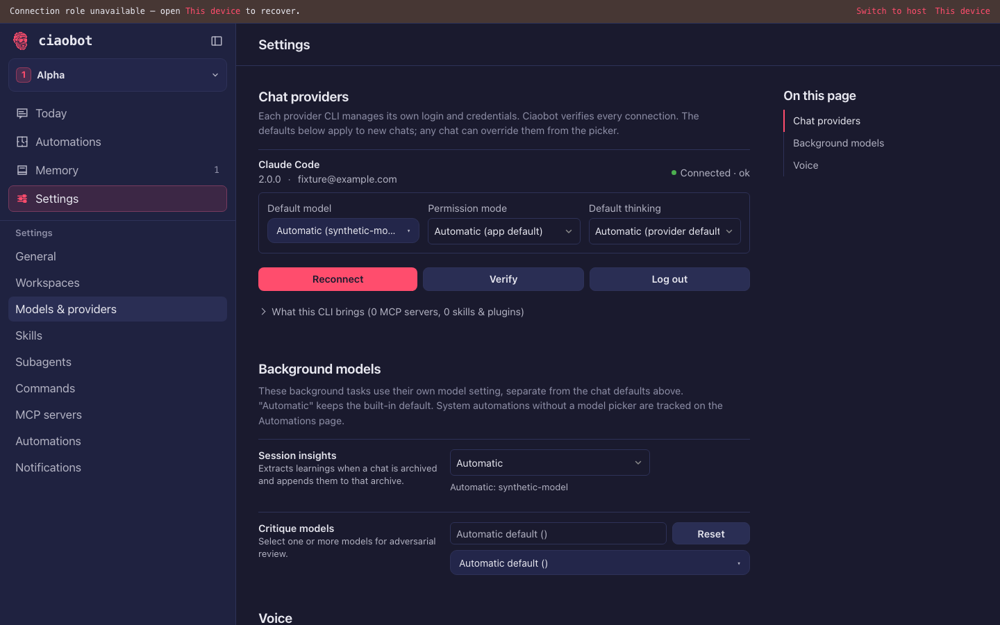
Each CLI manages its own login. These defaults apply to new chats; any chat can change them from the model chip.
Models for work Ciao does on its own. Automatic keeps the built-in choice.
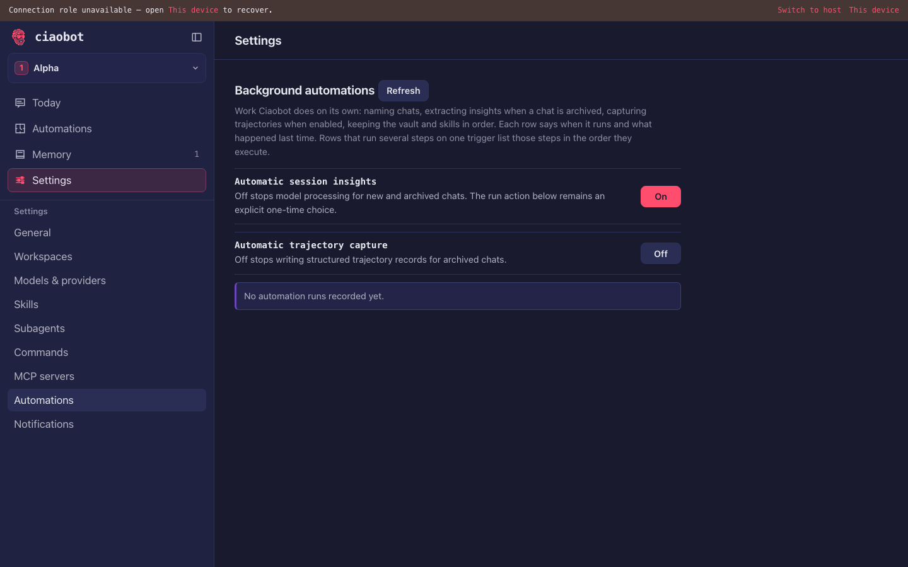
Work Ciao does on its own: naming chats, extracting insights when a chat is archived, keeping the vault and skills tidy.
No runs recorded yet. They appear here after the first nightly pass.
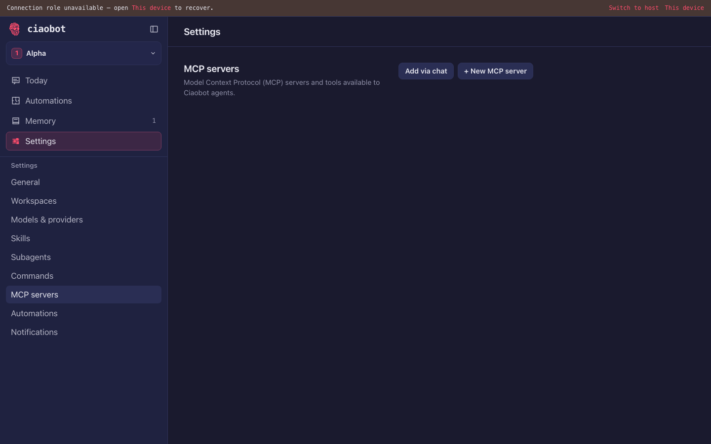
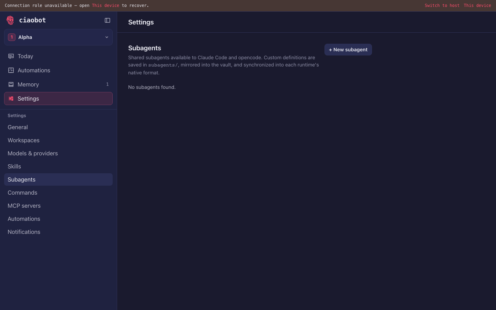
Shared with Claude Code and opencode. Saved in subagents/ and kept in the vault.
Skills rendered a blank pane against the e2e fixture (its /api/skills stub returns {}). Worth checking whether the real tab also goes blank when the response is empty or malformed, rather than showing an empty state.
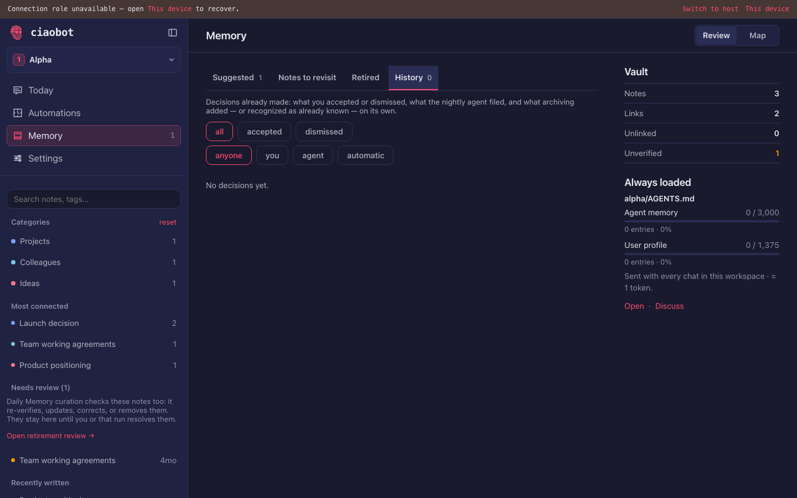
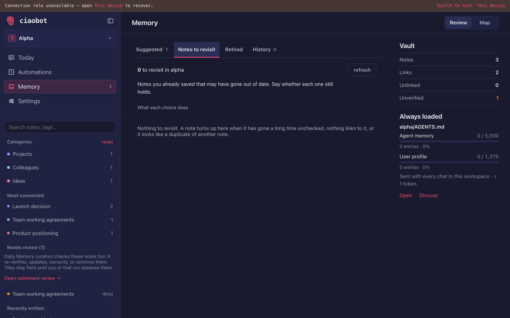
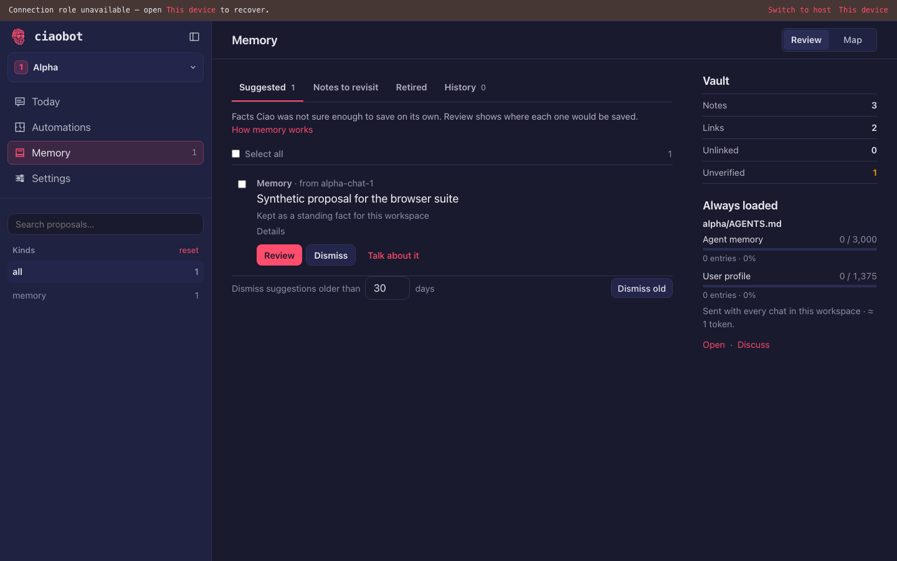
Facts Ciao was not sure enough to save alone.
Saved notes that may be out of date. Say whether each one still holds.
No decisions yet. Accepted and dismissed suggestions appear here.
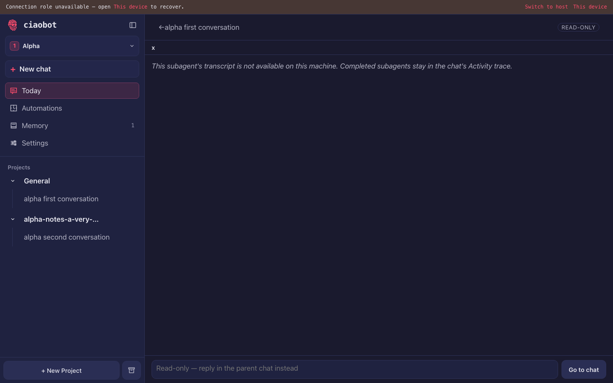
Finished subagents keep their steps in the parent chat's Activity.
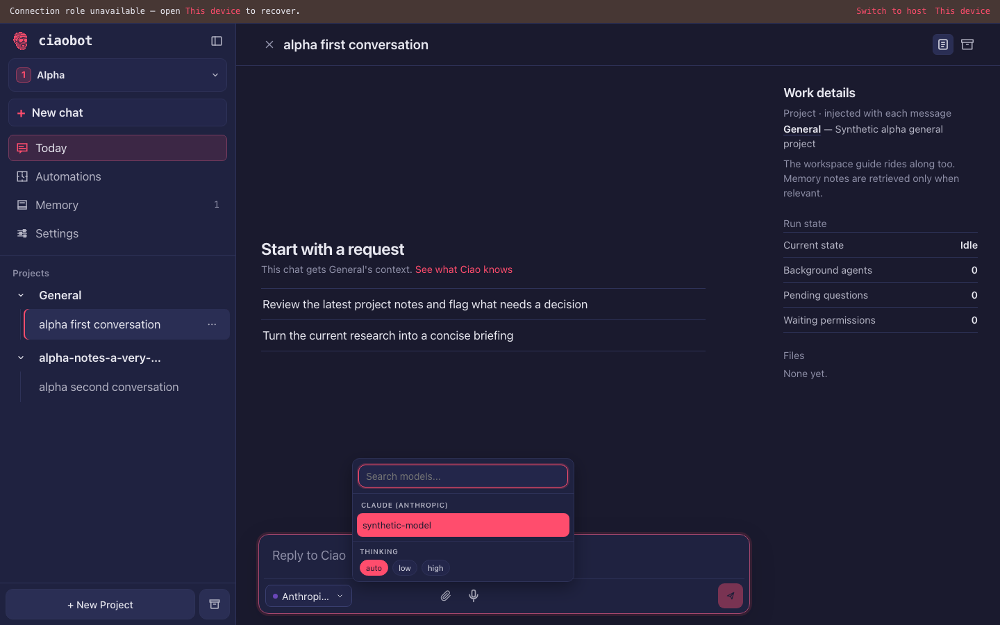
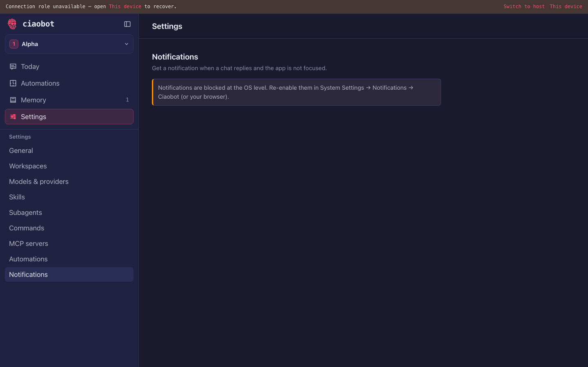
Ciao notifies you when a chat replies and the app is in the background.
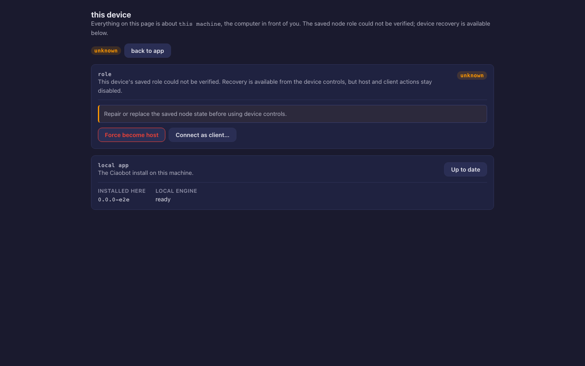
Everything here is about the computer in front of you.
0.0.0-e2edocs/REMOTE_BOUNDARY.md); only styling changes.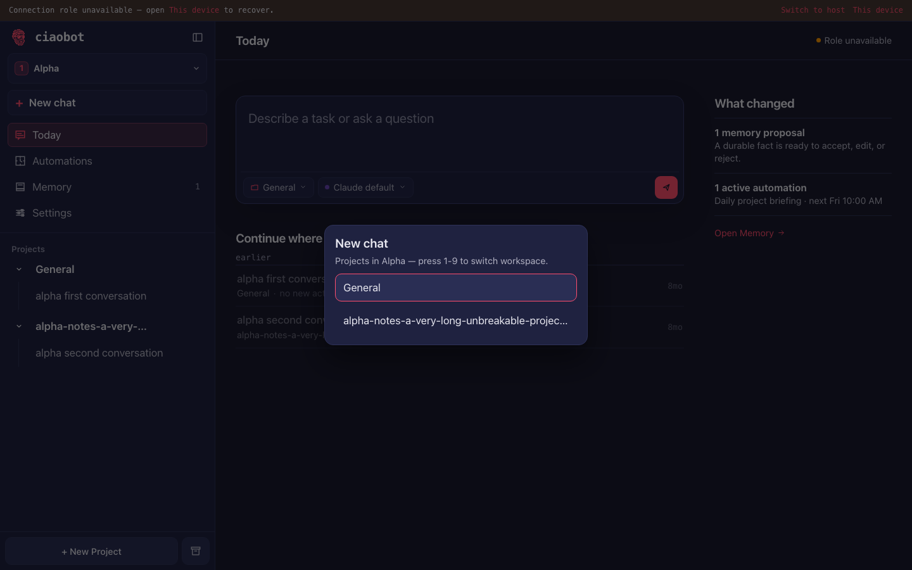
Pick a project in Alpha. 1–9 switch workspace.